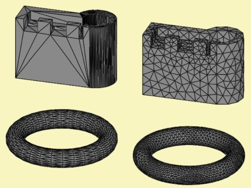

Mesh-File-Simple
Mesh-files are a ready to use sets of polygons, usually triangles and quadrilaterals. These files need to be imported and converted to an interior database which components of AKABAK can access. This database is called Mesh-File Object and is hosted on page General of the desktop. Each Mesh-File Object has an associated form where the file-name, scaling and filtering of elements can be edited. Chapter Mesh-Files gives an over-view about the workings of mesh-files. AKABAK can import a range of mesh-file formats. The most prominent is the file format of GMSH. However, in this chapter we want to describe the use of other formats. AKABAK supports a range of simple mesh-formats. Simple means here that firstly the mesh-file has no or very few meta-information, for example in form of Tags or group-names.  Secondly, the polygons are typically flat structures. Hence, the mesh is an approximation of the original CAD. As can be seen in the above example any given curvature of the original surface needs to be discretized by flat triangles. The above figure demonstrates also another issue of meshing.
The mesh on the left hand side is a direct export of the mesh which is generated by
the CAD application. This mesh is typically derived from its internal mesh which
the CAD tool needs for its internal calculations and rendering. AKABAK can read with the help of its Mesh-File Object form following mesh-file formats:
The msh-file of GMSH or GID is typically best suited for BEM calculations as explained in chapter Mesh-Files-GMSH. The obj-file of Wavefront is an old simple CAD transfer format. It allows for named grouping. The obj-format can be exported by many CAD-software tools. It needs experimentation whether the link to AKABAK works. The stl-file is a simple format. It is supported by all CAD-software tools because it is used for 3D-printing. The content is a list of coordinates of triangles. There is no meta-information on groups. The dae-file (COLLADA) is a simple format and often used together with SketchUp. Named groups can be created which eventually can be used as Tags of type Physical Groups. The svg-file is a graphic format for 2D-painting. It is used for Internet graphics and supported by the drawing application Inkscape. Its ease of use and rapid calculation in Dim=2D makes it ideal for experimentation and visualization of the wave-mechanics, say of the cross-section of a room or so. |